Last modified
한눈에 보기
- 문제상용 수난 구조장비는 비싸고 조작에 숙련이 필요해 비전문가가 바로 쓰기 어려움
- 목표(팀)물에 던지면 열원을 찾아 익수자에게 다가가는 저비용 구명보트와 발사장치
설계 흐름에서 제가 맡은 지점 상자를 누르면 기술 설명으로, 아래 번호는 진행 과정 사례로 이동합니다
- 내 담당 — 좌우 모터 차동 제어 | 아두이노 회로 구성 | 설계보고서 문서화 | 두 번째 학기 PM(프로젝트 진행 관리)
- 영상에서 확인 가능한 것 — 물을 채운 수조에 띄운 보트가 물 위에서 움직이는 모습
- 목표 — 비전문가가 바로 쓰는 구조장치 · 물에 던지면 열원을 찾아 익수자에게 다가가는 저비용 구명보트 · 발사장치
- 결과(팀) — 제작비 약 51만 원 시제품 · 교내 산학연 캡스톤디자인 아이디어 최우수상(24.11, 첫 학기 아이디어 단계) · 졸업작품 경진대회 장려상(25.09, 완성 뒤)
프로젝트 구현
물에 던지면 열원을 찾아 익수자에게 다가가는 구명보트와, 그 보트를 물 위로 날려 보내는 발사장치입니다. 보트 안의 아두이노 보드 한 장이 열화상 센서, 조종 신호 수신기, 좌우 모터를 모두 다룹니다.
선체와 발사장치 설계 (3D 모델링 · 부품 도면) 팀 담당 · 도면 본인 주 담당
진행 과정 02 구동 방식 결정과 좌우 모터 차동 제어04 선체 제작과 부위별 방수 · 침수 대비
팀은 보트 선체와 발사장치를 3D로 설계했습니다. 선체 형상은 팀이 함께 설계했고, 선체 항력 해석과 발사장치는 팀원이 주도했습니다.
- 설계 목표착수 충격에 덜 부서짐 · 물과 공기 저항이 작음 · 물에서 안정적으로 뜸
- 선체 모듈노즈콘 · 센서 케이스 · 배터리 및 모터 지지대 · 모터 · 케이스 상단·하단 · 구명튜브 고정장치
- 제작(팀)필라멘트 3D 프린팅 · 요소 조립과 상·하부 나사 고정 · 노즈콘 실리콘 주문 제작(착수 충격 완화)
- 방수(팀)모터 방수 퍼티(물 유입 방지 · 회전축 변동 방지) · 열화상 센서 글루건 · 몸체 측면 가스켓 · 실리콘 · 카본 봉 · 3D 프린팅 몸통 방수 스프레이
- 침수 대비(팀)센서 케이스 · 배터리 · 모터를 몸체에서 띄워 별도 고정(모듈화)
- 해석(팀원)선체 항력(물의 저항) 해석
- 발사장치(팀원)기존 컴파운드 석궁 3D 모델 참조 · 스프링 탄성 발사 구조 · 보트와의 간섭을 3D로 확인
- 도면(본인)구명보트 조립 도면 · 발표 자료의 발사장치 부품 도면 — 부품별 치수 · 재질 · 가공 방법 · 도면 구현 · 규격 · 기입
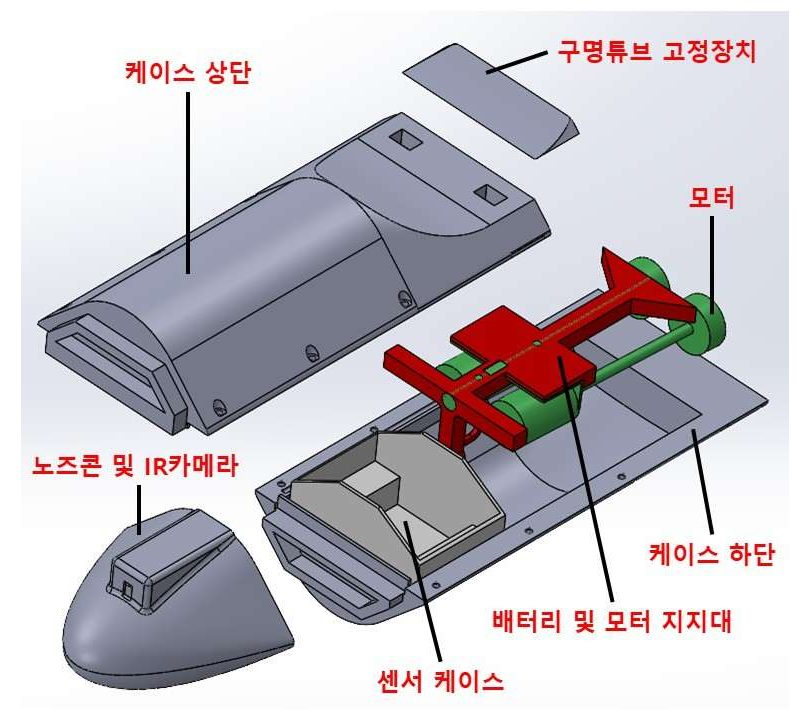
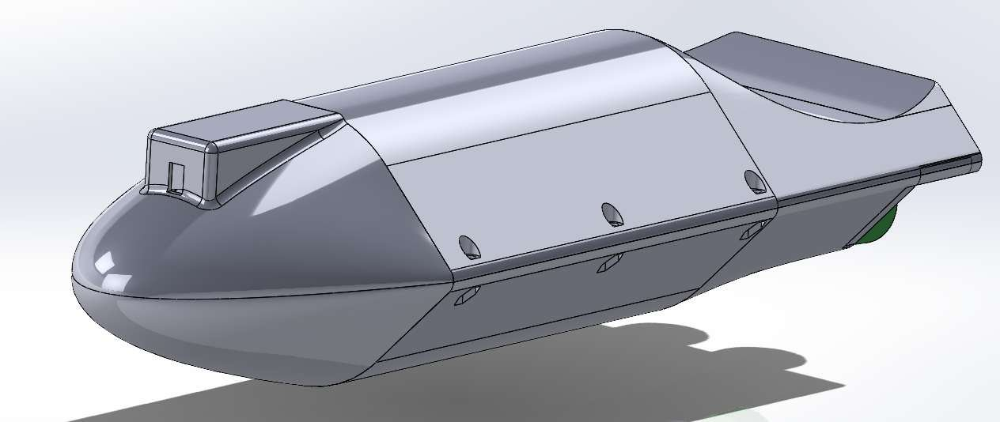
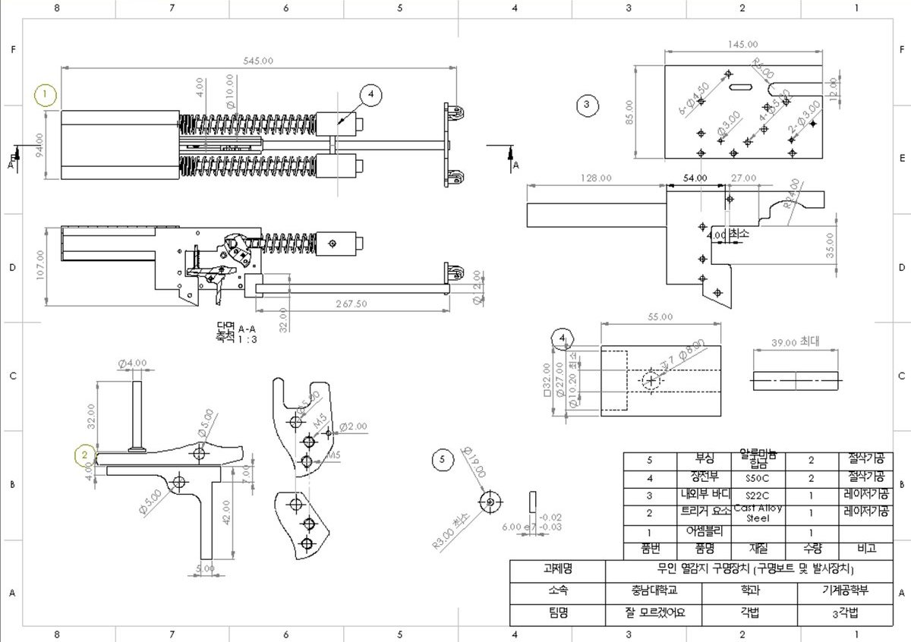
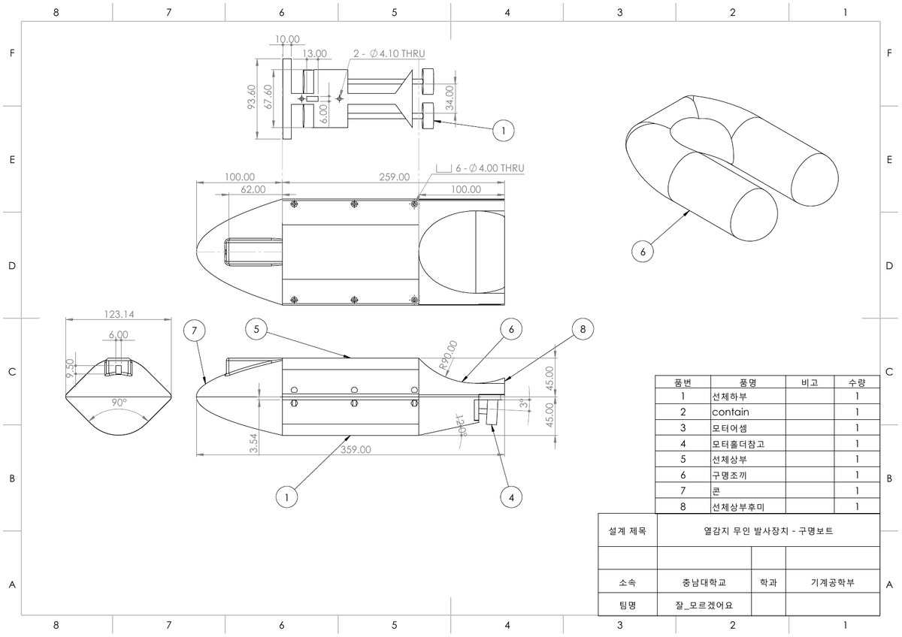
아두이노 한 장의 회로 구성 (Arduino Uno · L298N 모터 드라이버 · 7.4V 배터리) 본인 주 담당
진행 과정 01 아두이노 회로 구성03 부품별 코드 점검과 단일 보드 통합
저는 아두이노 보드 한 장에 열화상 센서, 조종 신호 수신기, 모터 드라이버, 7.4V 배터리를 잇는 회로 구성을 맡았습니다. 3D 모델에서 모터·센서 홀더 배치와 부품 간섭을 확인해, 보드와 모터 드라이버가 좁은 선체 안에 들어가도록 배선을 꾸렸습니다.
- 입력열화상 센서(AMG8833, I2C) · 조종 신호 수신기(RC 3채널)
- 출력L298N 모터 드라이버 → 좌우 DC 모터 2개
- 출력(튜브)별도 모터 드라이버(회로도의 L9110H) → 구명튜브용 기어모터(기어모터로 펼치던 방식)
- 전원7.4V 리튬폴리머 배터리 · 두 번째 학기에 팀이 On/Off 스위치와 배터리 보온 구조 추가
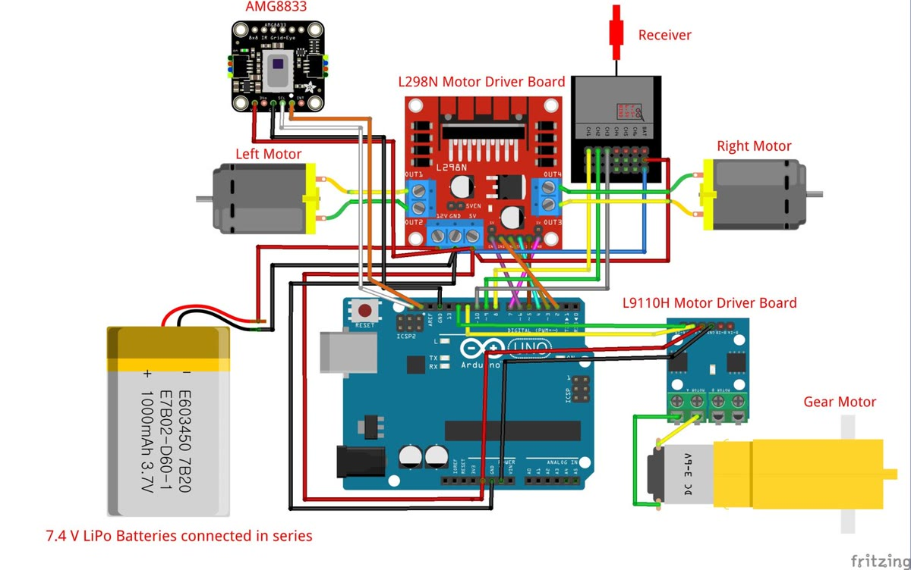
열원 쪽으로 스스로 방향 틀기 (AMG8833 열화상 센서 · 좌우 DC 모터 PWM) 구현 참여
진행 과정 02 구동 방식 결정과 좌우 모터 차동 제어
팀은 열화상 센서(8×8 격자로 온도를 재는 센서)가 읽은 값에서 가장 뜨거운 쪽이 왼쪽인지 오른쪽인지 찾도록 처리했습니다. 저는 그 방향에 맞춰 좌우 모터 출력을 다르게 주는 제어를 맡았습니다.
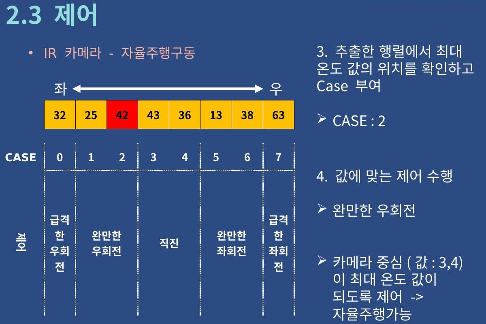
조종기로 직접 몰기 (RC 송수신기) 본인 주 담당
진행 과정 02 구동 방식 결정과 좌우 모터 차동 제어03 부품별 코드 점검과 단일 보드 통합
저는 무선 조종기(RC)의 신호로 좌우 모터를 움직여, 사람이 보트를 직접 몰 수 있는 수동 조종 부분을 맡았습니다. 팀이 함께 통합한 코드 기준으로는 조종 신호가 들어오면 수동 조종, 신호가 없으면 열원 자동 추적으로 나뉩니다.
발사장치로 물에 던져 넣기 (스프링·방아쇠 발사장치) 팀 담당
진행 과정 05 시제품 한계 분석과 2차 개선06 작동 순서와 야외 발사·비거리 시험
팀은 사람이 들고 방아쇠로 쏘는 발사장치를 만들어, 보트를 익수자 근처 물 위로 날려 보내도록 했습니다. 팀이 정리한 작동 순서는 아래와 같습니다.
진행 과정 각 번호를 펼치면 사진과 함께 자세한 설명이 나옵니다. 진한 글씨는 제 담당 및 주요 과정입니다.
- 기간졸업 프로젝트 · 창의적종합설계 → 심화종합설계 두 학기
아두이노 회로 구성
구현본인 주 담당무엇아두이노 보드 한 장에 열화상 센서 · 조종 신호 수신기 · 모터 드라이버 · 7.4V 배터리 연결방법3D 모델에서 모터 · 센서 홀더 배치와 부품 간섭 확인 → 좁은 선체 안에 보드와 모터 드라이버 배선맡은 일회로 구성
보드 한 장의 배선
저는 아두이노와 모터를 잇는 회로 구성을 맡아 진행했습니다. 아두이노 보드 한 장에 열화상 센서, 조종 신호 수신기, 모터 드라이버, 7.4V 배터리를 잇고, 선체 내부 공간과 부품 간섭을 고려해 보드와 모터 드라이버가 좁은 선체 안에 들어가도록 배선을 꾸렸습니다.
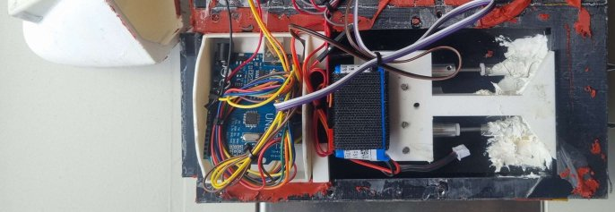
구동 방식 결정과 좌우 모터 차동 제어
환경 준비 · 구현본인 주 담당기준착수 충격 · 아두이노 제어 난이도선택(팀)일반 DC 모터 2개를 좌우에 두는 차동 방식 — 방향타 · BLDC · 방수 모터 제외맡은 일열원 방향 → 좌우 모터 PWM 출력 배분 · 무선 조종기(RC) 수동 조종점검(팀)지상에서 켜진 전기히터 쪽으로 향하게 하며 열원 추적 동작 확인
방향타·BLDC·방수 모터 제외
팀은 구동 방식을 토의하며, 프로펠러 하나에 방향타(키)를 다는 방식은 착수 충격에 키가 부서질 위험이 있어 제외했습니다. 고성능 모터(BLDC 모터)는 아두이노로 제어하기 어렵고 구조용 보트에 그 성능까지는 필요 없었으며, 방수 모터는 추진 성능이 떨어져 함께 제외했습니다.
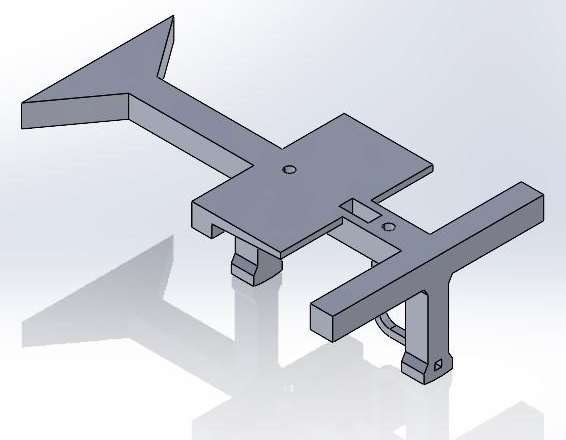
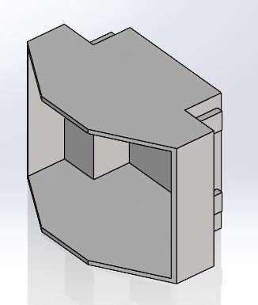
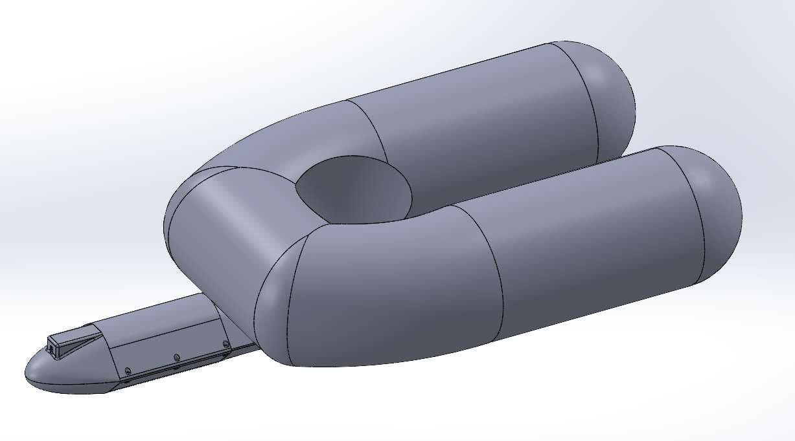
열별 최댓값과 PWM 출력 배분
팀은 열화상 센서의 8×8 온도값을 열별 최댓값 8개로 줄여 가장 뜨거운 열의 위치로 좌우 방향을 정했습니다. 저는 이 방향에 맞춰 좌우 모터 출력을 다르게 주는 제어를 맡아, PWM으로 좌우 출력 배분을 달리해 크게 꺾기, 완만히 꺾기, 직진을 구분했습니다.
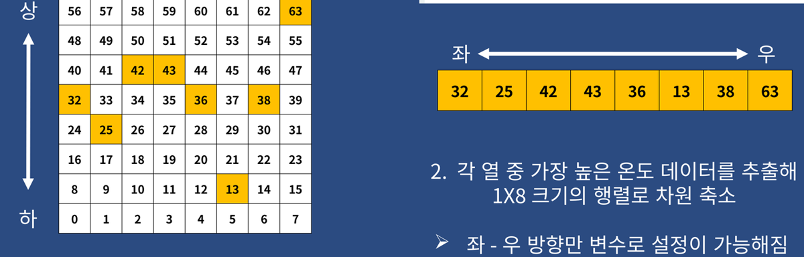
전기히터로 한 지상 점검
팀은 지상에서 보트를 손에 들고 켜진 전기히터 쪽으로 향하게 하며 열원 추적 동작을 점검했습니다.
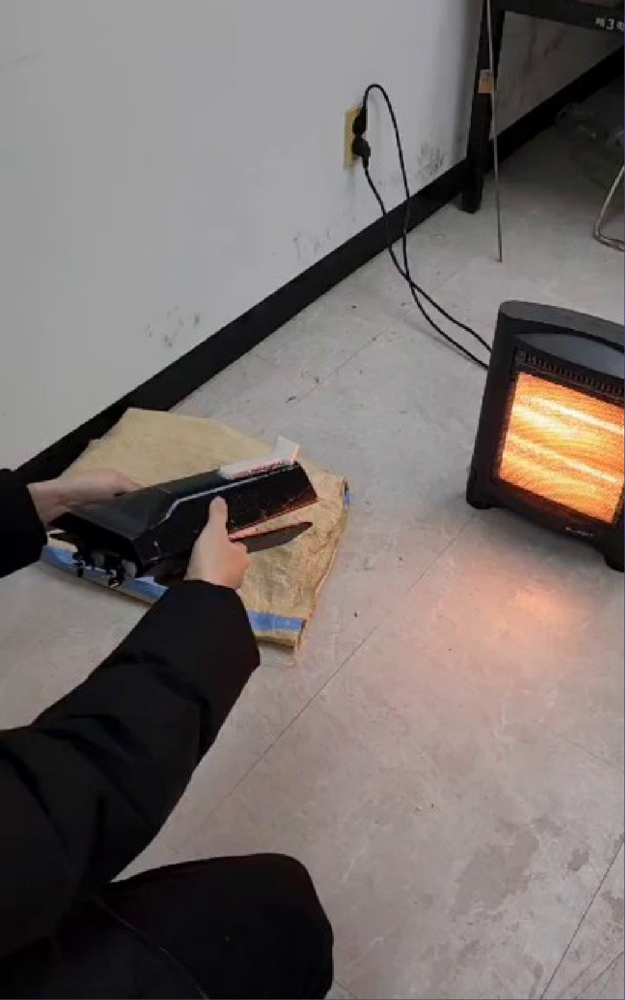
이 경험으로 장치가 실제로 쓰이는 환경의 충격이나 보드의 제어 성능처럼 실물 운용 조건을 기준으로 삼아야 부품이 견디고 다룰 수 있는 방식을 고를 수 있다는 점을 배웠습니다.
부품별 코드 점검과 단일 보드 통합
구현구현 참여막힌 점(팀)따로 짠 센서 · 조종 · 모터 코드를 아두이노 한 장에 합치기방법(팀)단계를 나눠 점검 · 센서 신호를 시리얼 통신으로 먼저 확인 → 모터 코드와 결합맡은 일기존 조종 · 모터 코드 재점검결과(팀)바로 앞 1m 정도 거리의 열원 탐지 확인
시리얼 통신으로 먼저 확인
팀은 코드를 합치다 막히자 문제를 한꺼번에 해결하려 하지 않고 단계를 나누어 점검했고, 모터 제어를 맡은 저는 기존 조종·모터 코드부터 다시 점검했습니다. 팀은 센서 신호를 시리얼 통신(보드의 값을 PC 화면으로 받아 보는 통신)으로 먼저 확인한 뒤 모터 코드와 합쳤습니다.
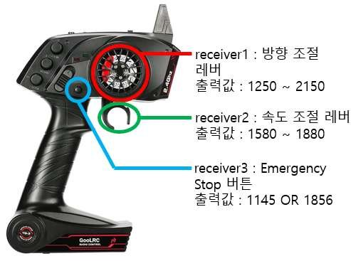
복합적인 문제가 발생했을 때 전체를 한 번에 합치기보다 모듈별 동작과 신호를 먼저 분리해 확인한 뒤 순서대로 합치는 작업 순서의 중요성을 익혔습니다.
선체 제작과 부위별 방수 · 침수 대비
구현팀 작업 참여제작(팀)필라멘트 3D 프린팅 · 상·하부 나사 고정 · 노즈콘 실리콘 주문 제작방수(팀)모터 방수 퍼티 · 열화상 센서 글루건 · 몸체 측면 가스켓 · 실리콘 · 카본 봉 · 몸통 방수 스프레이침수 대비(팀)센서 케이스 · 배터리 · 모터를 몸체에서 띄워 별도 고정
3D 프린팅과 조립
팀은 선체 모델을 필라멘트 3D 프린팅으로 만들어 요소를 조립하고, 선체 상부와 하부를 나사로 고정했습니다. 노즈콘은 착수 충격을 줄이기 위해 실리콘으로 주문 제작했습니다.
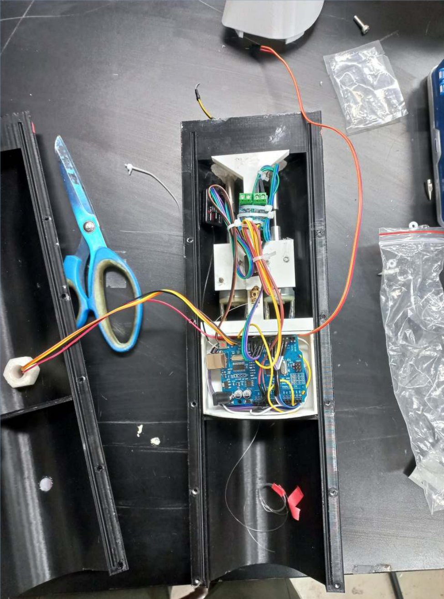
부위별 방수
팀은 부위마다 방수 방법을 달리했습니다.
- 모터 부분방수 퍼티 — 퍼티가 굳으면서 물 유입을 막고 모터 회전축 변동을 막도록 설치
- 열화상 센서글루건
- 몸체 측면 틈가스켓과 실리콘
- 구조 보완실리콘과 함께 카본 봉을 넣어 구조를 보완하고 틈을 더 촘촘히 메워 내부 기밀성을 유지
- 몸통 전체3D 프린팅한 몸통 전체에 방수 스프레이
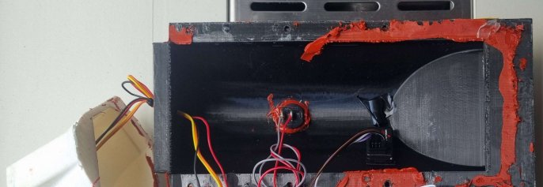
전자기기 띄워 고정
팀은 물이 차오르는 경우에 대비해 센서 케이스와 배터리·모터 등 전자기기를 몸체에서 일정 높이 띄워 별도로 고정하는 모듈화 설계를 적용했습니다.
팀 작업에 참여하며 물에 닿는 부위마다 방수 방법을 따로 고르고, 물이 들어오는 경우까지 대비해 부품을 배치하는 방식을 경험했습니다.
시제품 한계 분석과 2차 개선
문제해결팀 작업 참여문제 파트전원 계통 · 구명튜브 전개 기구문제전원 스위치가 없어 빠른 방전 · 저온 방전 · 기어모터의 허용하중 한계해결(팀)기말 발표에서 개선안 정리 → 두 번째 학기에 On/Off 스위치 · 배터리 보온 구조 · 자동 팽창 밸브배운 점한 학기의 한계 → 발표에서 개선안 → 다음 학기에 반영하는 흐름
첫 학기 방전과 허용하중
첫 학기 시제품은 전원 스위치가 없어 배터리가 빨리 방전되고 저온에서도 쉽게 방전되었으며, 구명튜브를 수동으로 부풀리던 기어모터는 견딜 수 있는 하중(허용하중)에 한계가 있었습니다.
기말 발표 개선안과 2학기 시제품 보완
팀은 기말 발표에서 전원 스위치 추가와 스위치부 방수 처리, 고용량 배터리 교체, 배터리 단열 처리를 개선안으로 정리했습니다. 팀은 두 번째 학기에 On/Off 스위치와 배터리 보온 구조를 넣고, 기어모터 메커니즘 대신 수면 착수 시 펼쳐지는 자동 팽창 밸브로 구명튜브 전개 방식을 바꿨습니다.
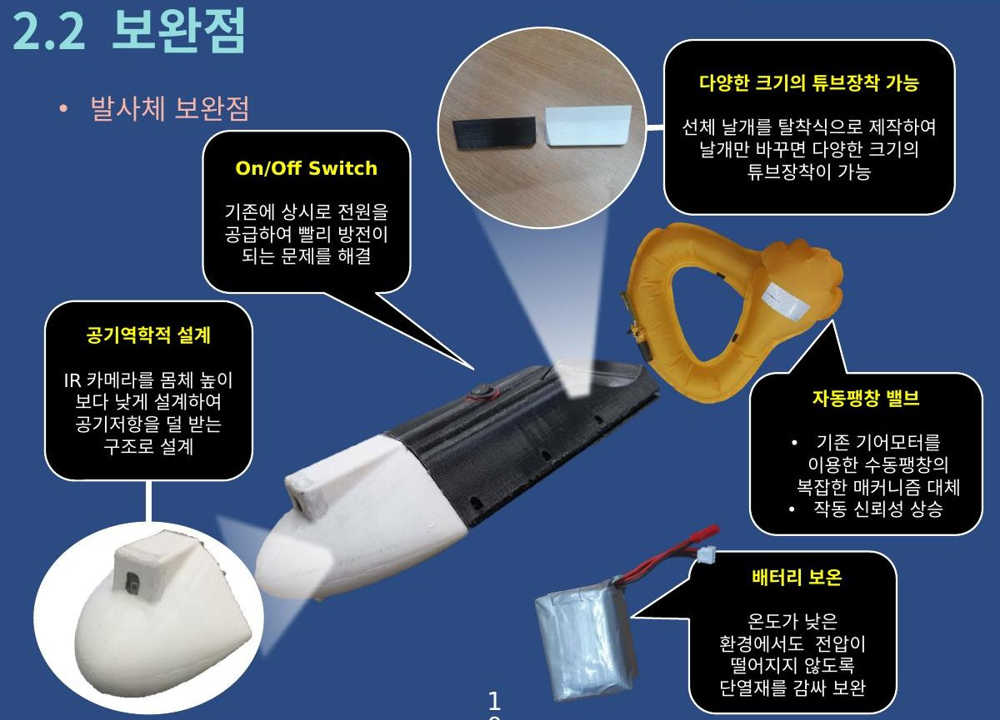
한 학기 결과의 한계를 발표에서 개선안으로 정리해 다음 학기에 반영하는 흐름을 경험했습니다.
작동 순서와 야외 발사·비거리 시험
구현팀 작업 참여무엇발사 → 착수 → 자동 이동 → 수동 주행 전환 → 정지 작동 순서 정리결과(팀)야외 발사 시험에서 실측 약 9m 비거리 · 수상 구동 · 비거리 · 자율주행 시험 영상
발사부터 정지까지 작동 순서와 비거리 시험
팀은 발사체를 발사장치에 장착해 발사하고 착수 후 익수자 쪽으로 자동 이동하며, 거리가 멀면 조종기로 수동 주행으로 전환하고 구조 종료나 돌발 상황 시 정지하는 순서로 작동 과정을 정리했습니다. 팀은 야외 발사 시험에서 실측 약 9m의 비거리를 확인했고, 수상 구동·비거리·자율주행 시험 영상을 남겼습니다.
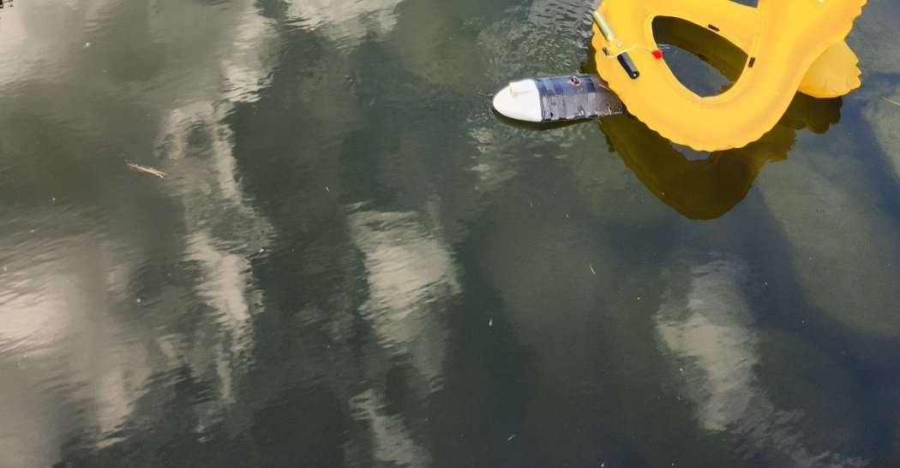
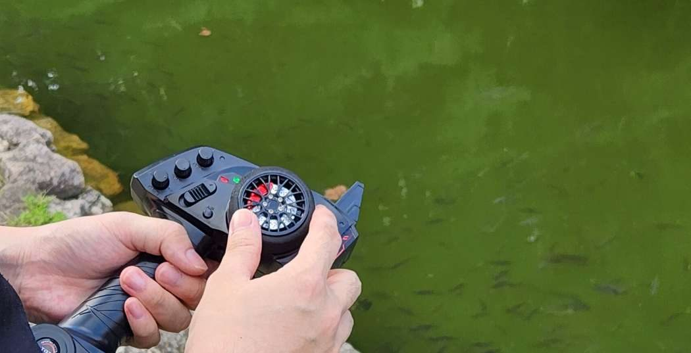
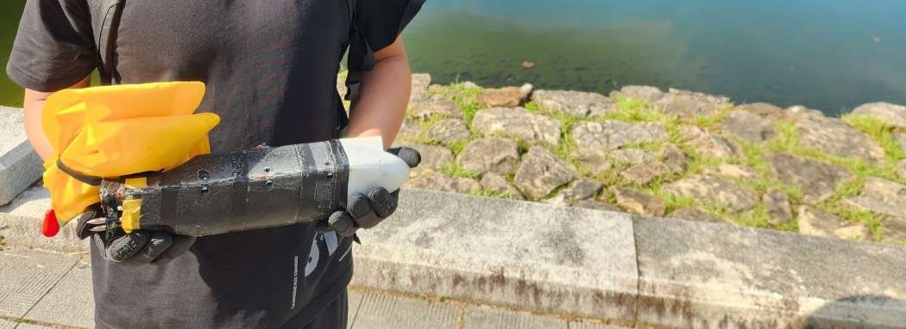
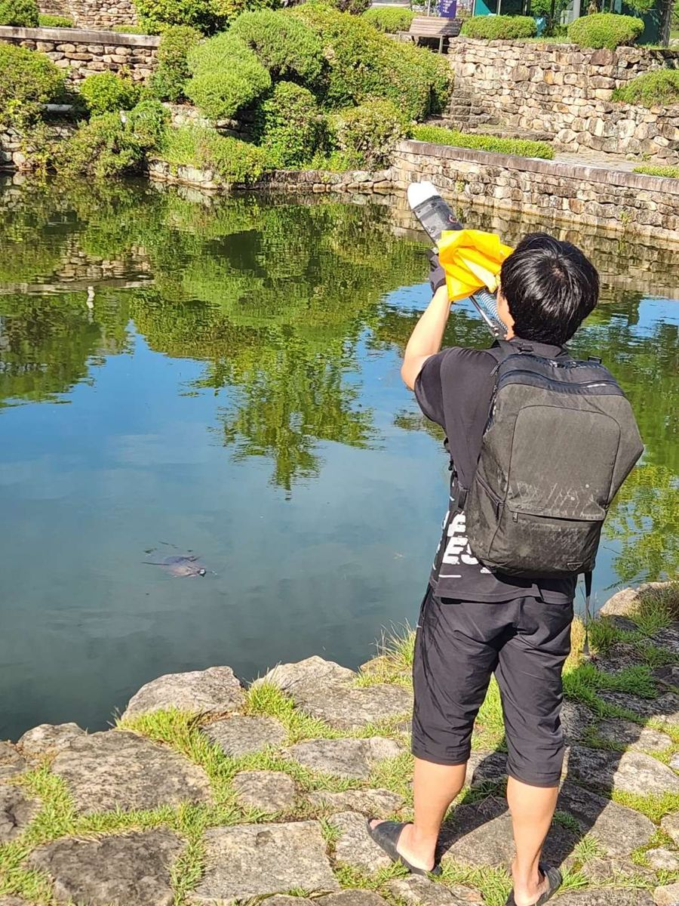
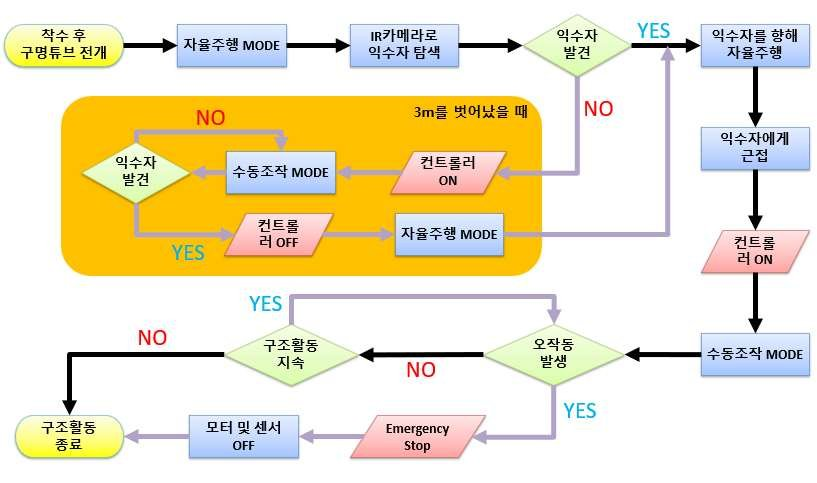
팀에서 일한 방식
- 팀 구성3인 — 역할: 회로 구성(제 담당) · 센서 제어 · 모델링
- 팀원 주도선체 항력(물의 저항) 해석 · 발사장치 · 구명튜브 팽창 기구
- 공동작업코드 통합 · 선체 형상 설계 · 선체 제작 · 방수 처리
그 안에서 제가 한 일:
- 3D 모델에서 모터·센서 홀더 배치와 부품 간섭 확인 → 회로와 제어를 선체 형상에 맞춤
- 회의록 작성 — 담당 · 다음 일정 · 시험 확인 결과 · 다음 개선 과제 기록
- 두 번째 학기 PM — 주간 강의 과제 발표 자료 준비 · 설계 수정 건의와 참여 · 물품 관리 · 회의와 작업 일정 조율
- 설계보고서 문서화
- 구명보트 조립 도면 · 발사장치 부품 도면 — 도면 구현 · 규격 · 기입
- 청구항 작성 — 프로젝트 기능명세 정리 및 강조용
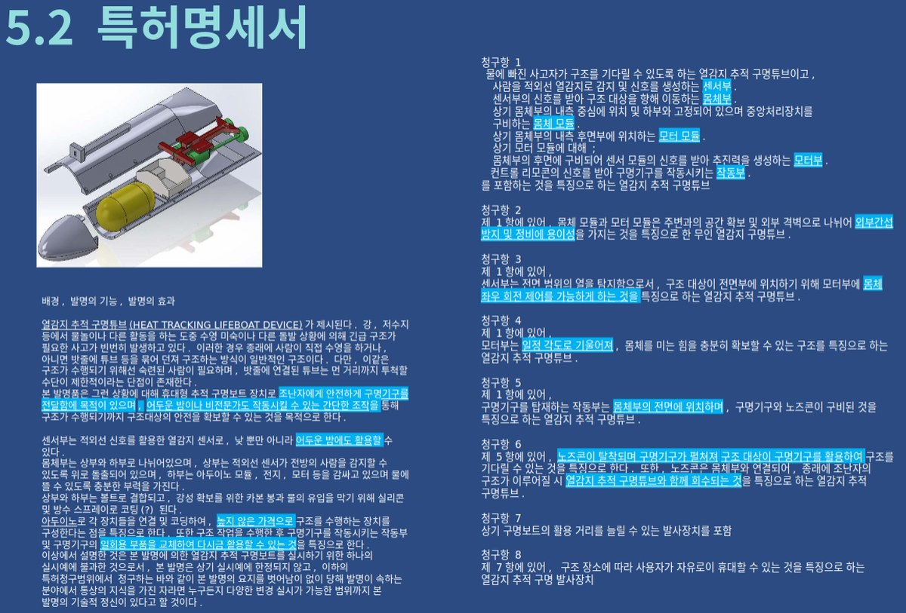
배운 점
- 개선 흐름한 학기 결과의 한계를 발표에서 개선안으로 정리해 다음 학기에 반영하는 흐름을 경험
- 협업회의록과 보고서로 팀 협업을 뒷받침하는 방식
기술 상세
팀 발표 자료(세부 기술): 창의적종합설계 발표 자료(PDF, 47쪽) | 심화종합설계 발표 자료(PDF, 48쪽)
창의적종합설계 쪽 목록: 주제 선정 배경 p3 | 시장 조사 p6 | 목표 설정 p7 | 모델링 p9 | 회로 p18 | 발사체 작동 순서도 p21 | 열화상 자율주행 구동 p23 | 조종기 수동 조작 p25 | 제한요소 p28 | 심화종합설계 계획 p32
심화종합설계 쪽 목록: 창의적종합설계 요약 p7 | 보완점 p10 | 발사체 작동 순서도 p13 | 방향 판정(CASE) p15 | 발사장치 p16 | 구동 영상 p26 | 완성도 평가 p27 | 도면 p30
코드 근거
Grad_proj — 프로젝트 기록과 아두이노 코드(원본이 남아 있지 않아 졸업논문에 실린 코드로 재구성, README가 코드 구성을 설명합니다)